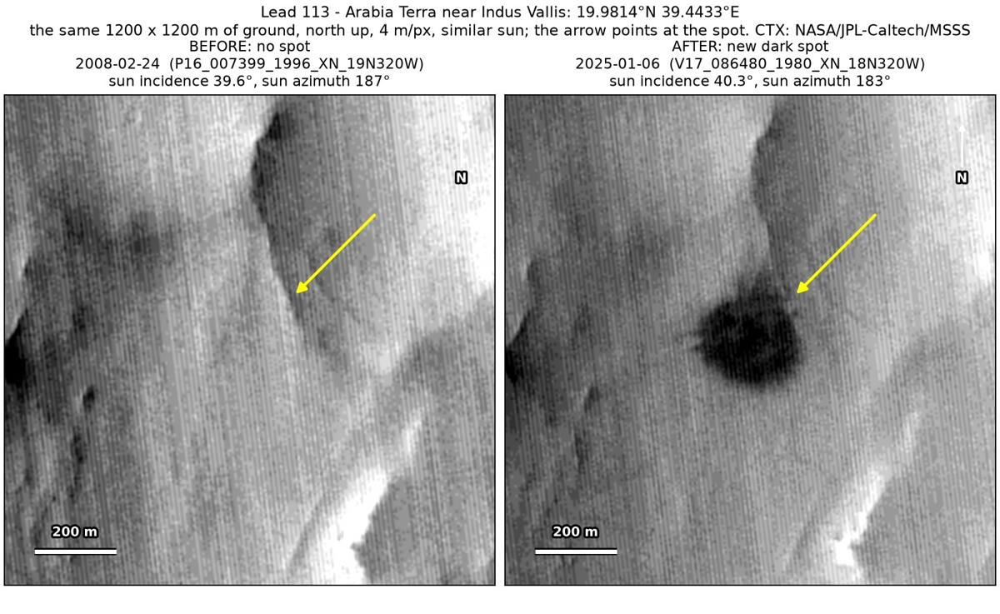
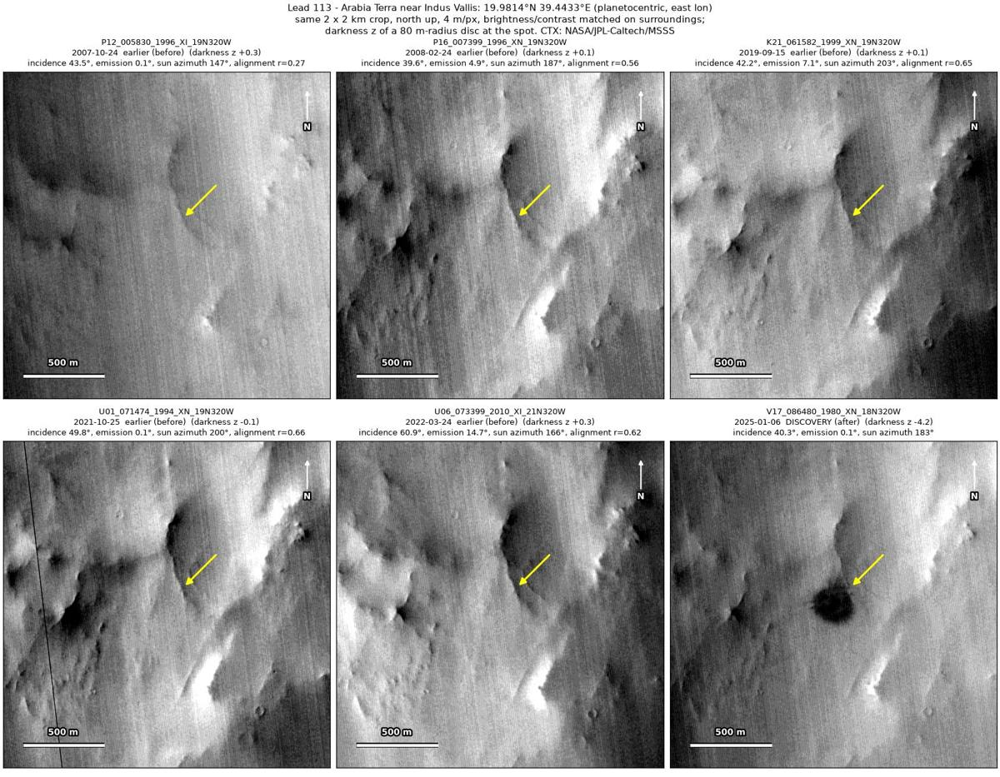
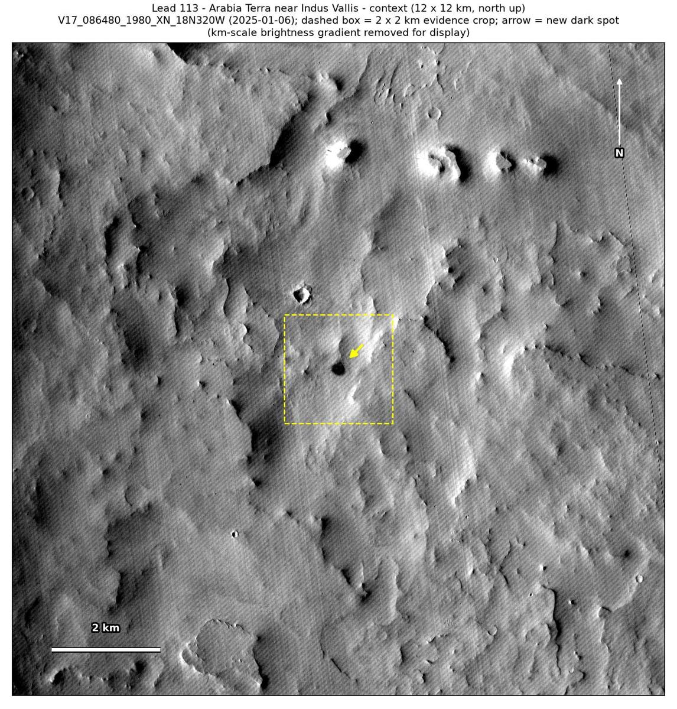

Professor of Mathematics
Paata Ivanisvili
Department of Mathematics, University of California, Irvine

← Possible new impact sites on Mars
Candidate 113: Arabia Terra near Indus Vallis
Promising · roughly 50%

What changed. A round dark spot about 230 m across, with a mottled interior and a soft edge, appeared at the foot of a shaded scarp on the plains of Arabia Terra near Indus Vallis between March 2022 and January 2025, in one CTX image so far.
Why it may be a new impact. Four earlier images, from 2008 to 2022, show plain ground there and the same scarp, one of them, of February 2008, under almost the same sun as the January 2025 image. The aligned before-and-after difference is deepest at the spot, with no other new dark mark and no tracks in the surrounding 5 × 5 km, and a round dark spot that appeared within three years could be the blast zone of a small new crater.
- Location
- 19.981° N, 39.443° E
- Absent
- 24 February 2008, 15 September 2019, 25 October 2021 and 24 March 2022
- Present
- 6 January 2025
- Size
- Round dark spot about 230 m across (234 × 236 m), with a mottled interior, a soft edge and no compact core
- Confidence
- Promising candidate: roughly 50% likely to be a new impact.
- Caveat
- It has no compact core, so it could be a patch where the wind stripped away bright dust, and only one image shows it, although at about 42 × 42 image pixels it is far larger than an image defect. The dark feature nearby used as a check only just passes the test in the February 2008 and October 2021 images and is fainter in the other two. No image from the high-resolution HiRISE camera covers it; the nearest ends 26 km away. Like every candidate here, it is unconfirmed: see the caveat.

